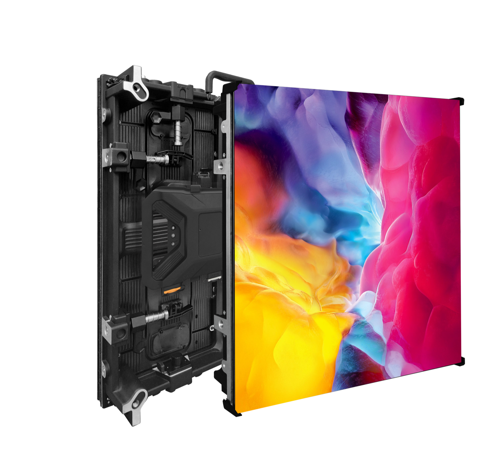

UL and ETL are the two Nationally Recognised Testing Laboratory marks that matter most for LED displays installed in US commercial buildings. Both are approved by OSHA and both are accepted by building authorities, and for most commercial installations one or the other is required by state and local code. Without a listing, an installation can be rejected by an inspector, and liability insurance may not cover an incident involving uncertified equipment.
This guide explains how UL and ETL differ in practice, why European CE marking does not substitute for either, and what a buyer should verify before placing an order.
UL, Underwriters Laboratories, and ETL, operated by Intertek, are both Nationally Recognised Testing Laboratories recognised by OSHA. For the purposes of building code acceptance and insurance, the two marks are treated as equivalent, and a display listed by either one is normally acceptable to an inspector. The choice between them is therefore a commercial and logistical decision for the manufacturer rather than a question of one being legally superior.
Both marks require type testing of the complete assembled product against the applicable safety standard, which for modern display hardware means the UL 62368-1 family of requirements covering audio, video and information technology equipment. Both also require ongoing factory follow-up inspections, typically several unannounced visits per year, to confirm that production continues to match the tested design.
The practical differences show up in scheduling and brand familiarity. Testing timelines are broadly similar, and both programmes carry similar ongoing audit obligations. Some specifiers simply have a preference based on past projects, and a supplier who can offer either mark gives the buyer flexibility to match a specification without changing the product.
Cost is the other area where the two diverge slightly. Programme fees depend on the number of product families involved, the complexity of the control electronics and the number of factory locations that must be audited, rather than on a fixed price difference between the two laboratories. For a buyer, the useful question is not which mark is cheaper in the abstract but which listing exists on the product being purchased.
What matters far more than the choice of laboratory is that the listing covers the exact model being purchased. A listing for one cabinet series does not transfer to another, and a buyer who assumes otherwise can discover the gap only when an inspector asks for documentation on site. Confirming the file number against the model in the purchase order is the single most valuable verification step.
It is worth being clear about what a listing actually represents. The mark confirms that a representative sample of the product passed the applicable safety tests and that the factory producing it is subject to ongoing surveillance. It does not certify image quality, brightness, colour accuracy or lifespan, and it says nothing about whether the display suits a particular viewing distance. Those remain specification questions that the buyer has to answer independently of the compliance file.
| Factor | UL | ETL |
|---|---|---|
| Recognition | OSHA-recognised NRTL | OSHA-recognised NRTL |
| Building code acceptance | Accepted nationwide | Accepted nationwide |
| Testing basis | UL 62368-1 and related standards | Same underlying safety standards |
| Factory follow-up | Unannounced periodic inspections | Unannounced periodic inspections |
| Marking | UL Listed mark on product and label | ETL Listed mark on product and label |
| Verification | Listed in UL online directory | Listed in Intertek directory |
Many manufacturers outside the United States advertise CE certification as their primary compliance credential. CE is a European conformity mark and is not recognised by US building codes. A display carrying only CE marking has no standing with a US inspector, because the code language refers to listing by a nationally recognised testing laboratory rather than to any foreign mark.
The consequences of importing CE-only product are concrete. During a commercial permit inspection, a non-listed display can be flagged and the installation held up until the issue is resolved, which may mean replacing the equipment. If an electrical incident occurs, an insurer may decline a claim on uncertified equipment, exposing the owner to liability that a listed product would have avoided.
Customs brokers have also become more attentive to safety marks on electronic imports, and a shipment that lacks a recognised listing can attract additional scrutiny. Even where goods are released, the downstream risk to the project remains, because the compliance problem simply moves from the port to the installation site.
It is worth being precise about what a supplier means by compliance. Some manufacturers present a CE declaration of conformity, others present a laboratory test report, and the two are not the same thing. A test report from an accredited laboratory supports a listing application but does not itself constitute a listing, so buyers should ask specifically whether the product carries a UL or ETL mark rather than whether it has been tested.
Asia Vision products carry UL and ETL listings for the US market alongside FCC Part 15 compliance, so a buyer receives a product that satisfies both the safety listing requirement and the radio-frequency emission rules. That combination covers the two compliance questions US inspectors and specifiers most often raise.
Because CE and the US listing regime rest on different legal bases, a product can be fully compliant in Europe and still be unlisted in America. Importers who assume the two travel together are the ones most likely to discover the gap at the permit stage, when correcting it is slowest and most expensive.
Before placing an order, verify the certification position of the specific product rather than the supplier in general. A short, structured check prevents the most common and most expensive compliance surprises. The following steps can be worked through in an afternoon, and each one produces a document you can keep in the project file.
Each item can be checked against a document the supplier should already hold. A manufacturer that has invested in genuine listings will produce them quickly and without hesitation; hesitation or vague assurances are themselves a warning sign that the listing may not cover what is being sold.
It is also worth recording the verification results in the project file. If an inspector, an insurer or an end client raises a question months later, having the file number and the directory screenshot to hand resolves it in minutes rather than days. Compliance documentation is only useful when it is retrievable.
Ongoing compliance does not end at the point of purchase. Because listing programmes require periodic factory inspections, a supplier who lets those inspections lapse can have a listing withdrawn, which would affect support and spare parts later in the product's life. A buyer making a long-term investment should ask how the supplier maintains its listing status year after year, not merely whether a certificate existed at the time of sale.
The checklist also applies to peripheral equipment. Power distribution units, signal processors and control computers inside a US installation are separate products with their own listing requirements. Buyers assembling a complete system should confirm that every mains-powered component carries a recognised mark, because an inspector evaluates the installation as a whole rather than the display alone.
Finally, keep the documentation current. Standards evolve, and a listing issued years ago may have been updated since. Requesting the latest revision of the listing document, rather than an old scan, ensures that what is submitted with a permit application reflects the product as it is currently built.
A final practical point is to match the certification document to the commercial document. The model number on the UL or ETL file, the model number on the purchase order and the model number on the packing list should all agree. When they do not, customs brokers, insurers and inspectors each have a reason to pause, and resolving a mismatch after the goods have landed takes far longer than checking the three documents before the order is confirmed.
A certificate PDF proves nothing. Anyone can produce a document with a logo on it. What matters is whether the listing exists in the issuing organisation's live directory, and whether it covers the exact model you are buying.
| What to check | Where to check it | Red flag |
|---|---|---|
| UL file number resolves | UL Product iQ (free account) | Number returns nothing, or a different product category |
| ETL listing resolves | Intertek Directory | "Pending" status presented as completed |
| Model coverage | Match the listed model string to your quotation exactly | Certificate covers a "similar" or older model |
| Latest follow-up inspection | Ask for the current inspection record | Last inspection older than 12 months |
| Manufacturer name matches | Directory entry vs the entity on your contract | Listing held by a company you are not buying from |
Run this check before you place a deposit, not after. If the listing does not cover your model, the problem is not paperwork — it is that your installation may fail inspection.
The Authority Having Jurisdiction (AHJ) carries the final say on whether your installation passes. Inspectors are not looking for a certificate binder — they look for specific things on site and in the submittal:
This is the practical reason US buyers ask so much about certification: the risk sits with the installation, and the installation sits with them.
For an imported LED display placed on the US market, the compliance duty generally sits with the US entity that imports and sells the product, not with the Chinese factory. That has three consequences buyers need to plan for:
This is why experienced importers treat certification as part of supplier selection, not a document to collect at the end. A supplier who can produce the file number, the current inspection record and a model matrix without delay is worth more than one who quotes lower and then goes quiet on compliance.
Buyers often assume certification is a formality. In practice it is a project with its own schedule:
| Stage | What happens | Why it affects your order |
|---|---|---|
| Documentation review | Supplier provides construction files, component lists and test reports | Gaps here delay everything downstream |
| Sample testing | The offered configuration is tested against the applicable standard | A different component can require re-testing |
| Listed model matrix | Cabinets, pitches and configurations covered are defined | Models outside the matrix are unlisted |
| Follow-up inspection | Ongoing factory inspection keeps the listing valid | Lapsed inspection undermines the listing |
Plan the schedule around certification, not after it. If your project has a fixed installation date, confirm that the listing covers the model you ordered and that the follow-up inspection is current, well before the shipping window opens.

FCC Part 15 evidence is supplied per model; the X Series and COB Z rental series are the configurations most often filed for US imports.
Related reading: Event and rental LED screens in Mexico
Verify certification and get factory-direct pricing for US-compliant LED displays.
Request Certified QuoteChat on WhatsApp